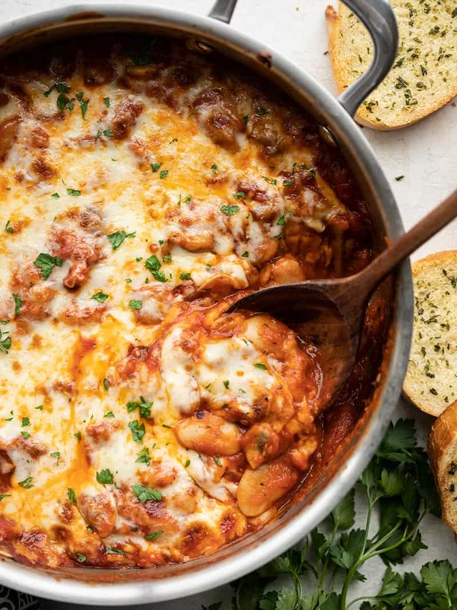

White Beans with Mushrooms and Marinara

Description
White beans make a fiber-filled swap for gnocchi in this cheesy, indulgent skillet
full of white beans, mushrooms, and marinara.
Ingredients
- 8 oz. mushrooms ($2.29)
- 2 Tbsp olive oil ($0.32)
- 1 pinch salt and pepper ($0.05)
- 2 cloves garlic ($0.16)
- 2 cups marinara (or more to your liking) ($1.00)
- 2 15oz. cans butter beans ($2.00)
- 1/2 tsp dried basil ($0.05)
- 1 pinch crushed red pepper ($0.02)
- 4 oz. mozzarella ($0.65)
Steps
- Preheat the oven to 400ºF. Wash and slice the mushrooms. Add the mushrooms, olive oil, and a pinch of salt and pepper to a deep skillet. Sauté the mushrooms until they have wilted and all the moisture in the skillet has evaporated.
- While the mushrooms are sautéing, mince the garlic, drain and rinse the butter beans. Add the garlic to the skillet with the mushrooms and sauté for 2 minutes more.
- Add the rinsed butter beans, marinara, basil, and red pepper to the skillet. Stir everything to combine, then allow it to heat through, stirring occasionally.
- While the skillet is heating through, shred the mozzarella. Top the skillet with the mozzarella, then cover the skillet with foil. Transfer the skillet to the oven* and bake for 5-7 minutes, or until the cheese is melted.
- Once the cheese has melted, remove the foil, switch the oven to broil, and broil the skillet for a few minutes more to brown the cheese (watch closely, as browning can happen quickly with the broiler). Serve hot, with garlic bread for dipping!